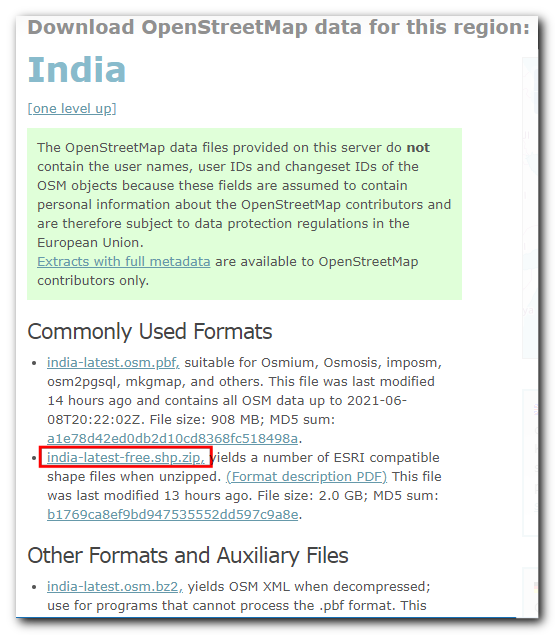
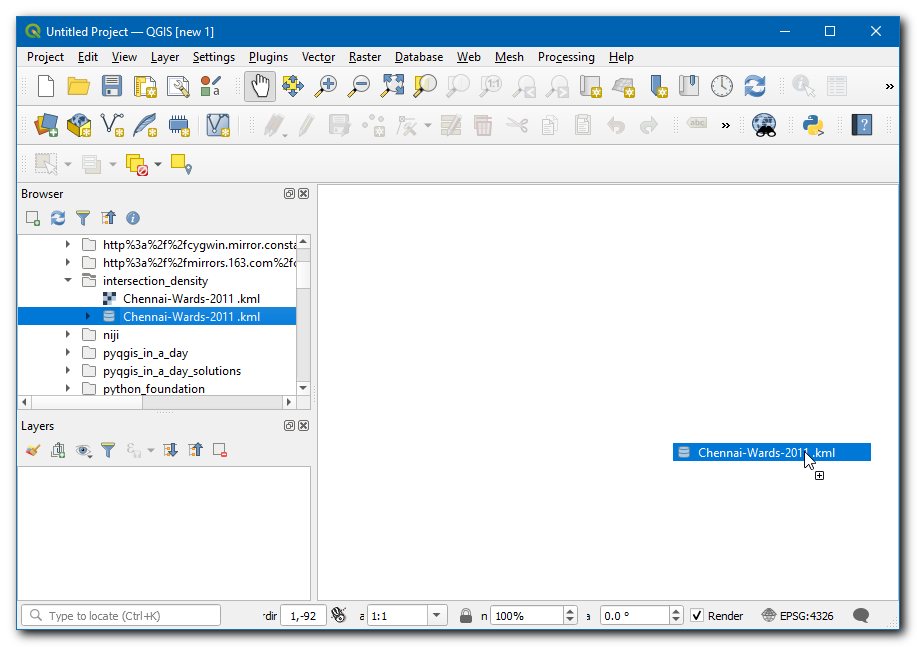
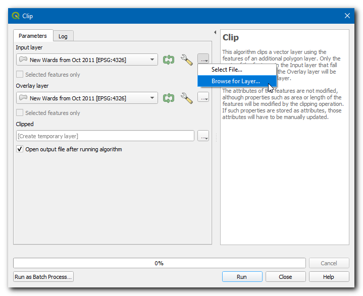
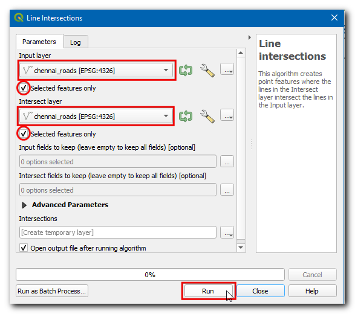
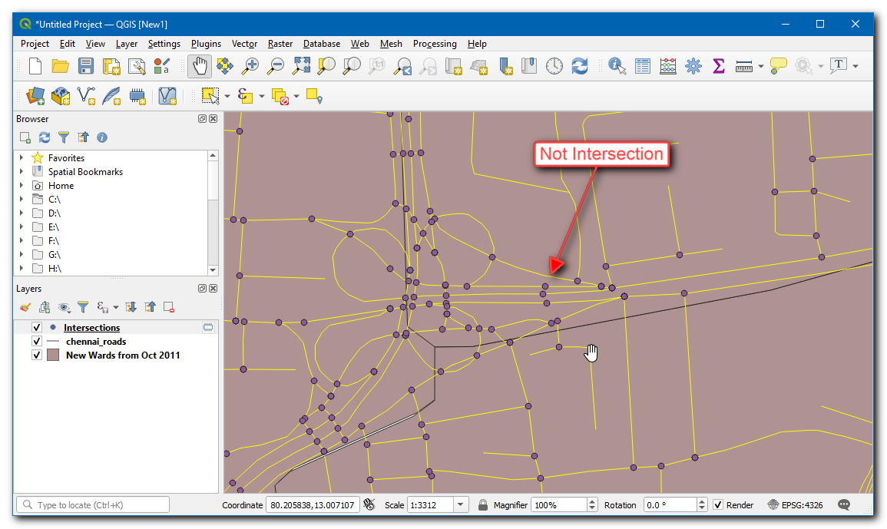
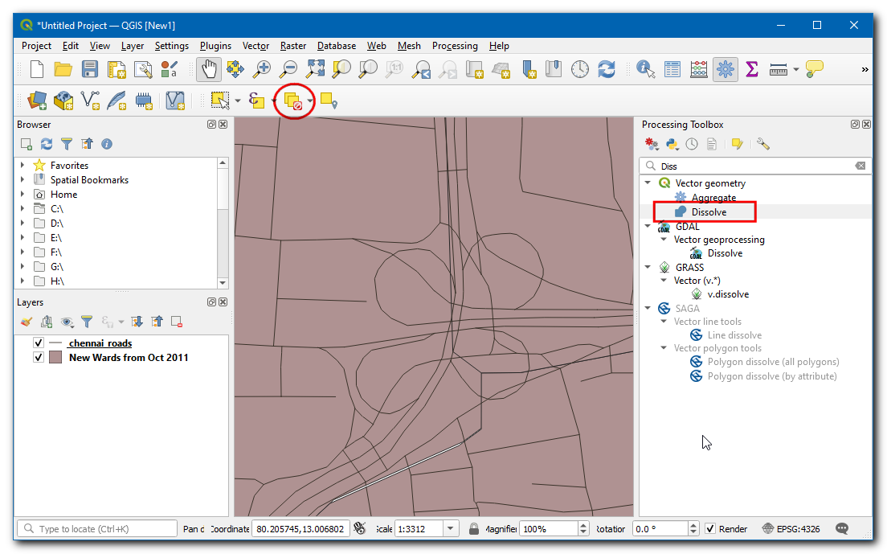
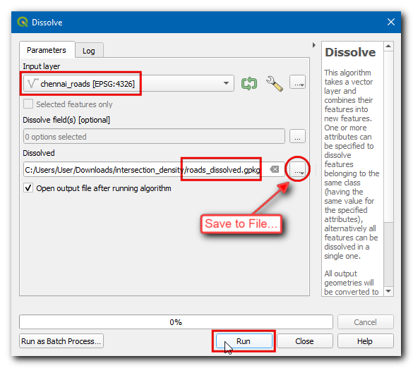
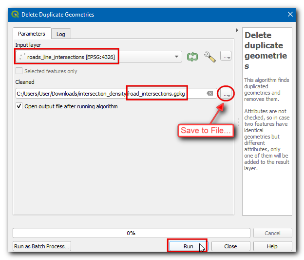
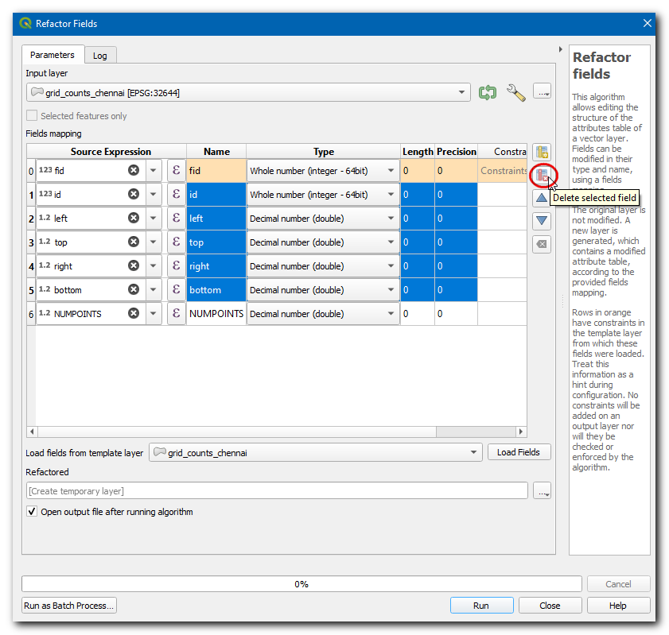
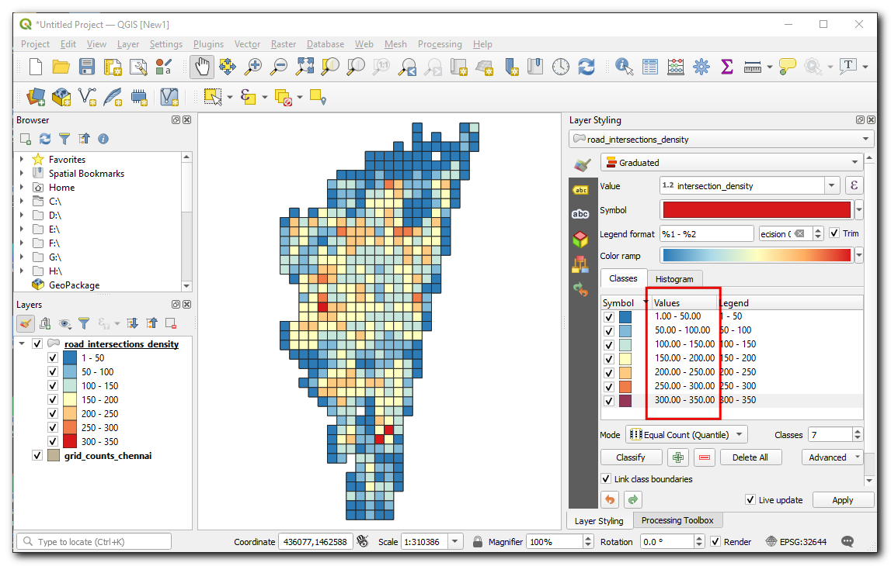

Calcul de densité des intersection de rues (QGIS3)¶
La densité des intersections de rues est une mesure utile pour évaluer la connectivité d’un réseau. Pour calculer cette densité, on extrait les intersections de rues et on les agrège en fonction d’une grille régulière. Cette analyse est généralement utilisée pour le design des systèmes de transports et pour la planification urbaine afin de déterminer la « marchabilité » des quartiers. Grâce à QGIS et au jeu de données global des réseaux routiers fourni par OpenStreetMap, il est facile de calculer et de visualiser la densité des intersections n’importe où dans le monde.
Description de l’exercice¶
In this tutorial, we will take OpenStreetMap road network data and calculate the street intersection density for the city of Chennai in India.
Autres compétences abordées¶
Comment télécharger les données OpenStreetMap au format shapefile et en extraire celles de notre zone d’intérêt grâce à l’outil Couper.
Comment créer des grilles dans QGIS.
Récupérer les données¶
Pour récupérer les limites de la ville de Chennai, nous allons utiliser les données Opencities. Puis nous récupérerons les données de réseaux routiers indiens via OpenStreetMap Data Extracts.
Télécharger les limites de la ville¶
Visiter le site web Opencity , puis recherchez « Chennai wards map ».

Cliquez sur le premier lien et télécharger les données au format KML. Une couche
Chennai-wards-2011.kmlsera téléchargée.

Télécharger le réseau routier¶
Visiter le serveur OpenStreetMap Data Extracts download de GEOFABRIK. Pour ce tutoriel, nous avons besoin des données pour la ville de Chennai en Inde. Cliquez sur Asia.

Puis dans sub-regions, selectionnez India.

Recherchez le fichier
india-latest-free.shp.zipet cliquez dessus pour le télécharger. Ces données sont aussi disponibles dans d’autres formats en fonction de vos besoins.

Il s’agit d’un téléchargement lourd qui contient des données pour le pays entier. Décompressez le fichier
india-latest-free.shp.zip. Vous obtiendrez de nombreuses couches shapefiles.

Extraire le réseau routier contenu dans les limites de la ville¶
Nous allons maintenant couper la couche des réseaux routiers avec notre zone d’intérêt. Ouvrez QGIS et glissez-déposez la couche
Chennai-wards-2011.kml.

Instead of opening a large layer in QGIS, we can directly read it from the disk and clip it. Open the Processing Toolbox and locate the algorithm. Double-click to open it.

Pour la Couche source, sélectionnez
…et cliquez sur Chercher une couche…

Recherchez le dossier où vous avez enregistré les données OpenStreetMap et sélectionnez
gis_osm_roads_free_1.shp. Pour Couche de superposition, sélectionnezNew Wards from Oct 2011. Puis pour Découpé, cliquez sur…, sélectionnez Enregistrer vers un fichier…, et choisissez le dossier dans lequel vous voulez enregistrer les résultats. Nommer votre fichierchennai_roads.gpkg, et cliquez sur Exécuter.

Once the processing finishes, a new layer
chennai_roadswill be loaded in the canvas.

Par commodité, vous pouvez directement télécharger une copie du jeu de données coupé sur le lien ci-dessous :
Sources des données : [OPENCITIES] [GEOFABRIK]
Procédure¶
Now both layers used for the calculation will be available, if you have downloaded the data, then locate the
Chennai-Wards-2011.kmlandchennai_roads.gpkgin Browser, then drag and drop them on the canvas.

La première étape est d’extraire les intersections de route. Cela peut être effectué en utilisant l’outil intégré Intersections de lignes. Testons-le sur une petite zone pour voir si les résultats sont satisfaisants. Sélectionnez la couche Routes, et utilisez l’outil Sélectionner les entités pour dessiner un rectangle et sélectionner quelques routes.

Open the Processing Toolbox and locate the algorithm. Double-click to open it.

Sélectionnez
chennai_roadsà la fois comme Couche source et Couche d’intersection. Assurez vous de bien cocher les cases Entité(s) sélectionnée(s) uniquement. Puis cliquez sur Exécuter.

Une nouvelle couche
Intersectionssera ajoutée. Vous remarquerez que bien que la plupart des points d’intersection soient corrects, il y a des faux positifs. En effet, l’algorithme considère les intersections de chaque segment de ligne comme des intersections valides. Or pour notre analyse, nous avons besoin d’extraire les intersections uniquement lorsque 2 rues ou plus se croisent.

Remove the Intersections layer and click Deselect features from all layers button to remove the selection. We will now merge all adjacent road segments, so the segments between intersections are merged into a single feature. Open the Processing Toolbox and locate the algorithm. Double-click to open it.

Sélectionnez
chennai_roadscomme Couche source. Nommez la Couche regroupéeroads_dissolved.gpkg. Cliquez sur Exécuter.

Tous les segments de route de la couche
roads_dissolvedrésultante sont fusionnés en une seule entité.

Next, open the Processing Toolbox and locate algorithm. Double-click to open it. Select
roads_dissolvedlayer as the Input layer. Enterroads_singleparts.gpkgas the Single parts output. Click Run.

The resulting layer
roads_singlepartswill have all adjacent segments merged, remove theroads_dissolvedandchennai_roadslayers. Now, open the Processing Toolbox and locate the algorithm. Double-click to launch it.

Sélectionnez
roads_singlepartsà la fois comme Couche source et comme Couche d’intersection. Nommer la couche de sortieroads_line_intersections.gpkg. Cliquez sur Exécuter.

Note
Cette opération est gourmande en calculs et peut prendre beaucoup de temps en fonction de la capacité de traitement de votre ordinateur.
The resulting layer
roads_line_intersectionsnow has all intersections correctly identified. But it is still not perfect. Use the Select features by Area tool and select any intersection. You will see that at each intersection there are few duplicate points from adjacent segments. If we use this layer for further analysis, it will result in an inflated number of intersections. Let’s remove duplicates, open the Processing Toolbox and locate the algorithm. Selectroads_line_intersectionsas the Input layer and enterroad_intersections.gpkgas the Cleaned output layer. Click Run.

The new
road_intersectionslayer has the correct number of road intersections extracted from the source layer. Right-click the oldroad_line_intersectionslayer and select Remove layer to remove it.

We will now compute the density of points by overlaying a regular grid and counting points in each grid polygon. We must reproject the data to a projected CRS so we can use linear units of measurements. We can use an appropriate CRS based on the UTM zone where the city is located. You can see UTM Grid Zones of the World map to locate the UTM zone for your city. Chennai falls in the UTM Zone 44N. Open the Processing Toolbox and locate the algorithm. Double click to open it.

Sélectionnez
road_intersectionscomme Couche source. Recherchez un SCR en cliquant sur l’icône globe à droite du champ SCR cible et sélectionnezEPSG:32664 - WGS 84 / UTM zone 44N. Il s’agit d’un SCR basé sur le système géodésique WGS84 pour la zone UTM 44N. Nommez le fichier Reprojetéroad_intersections_reprojected.gpkg. Cliquez Exécuter.

Une fois le traitement terminé et la couche
road_intersections_reprojectedajoutée, faites un clic droit sur la couche et sélectionnez . Puis supprimez la coucheroad_intersections.

Project CRS will be updated in the bottom right of the window. The purpose of this step to ensure that all layers are displayed in the CRS of new layer. We are now ready to create the grid using the
road_intersections_reprojectedas reference. Open the Processing Toolbox and locate the algorithm. Double click to open.

Pour le Type de grille, sélectionnez Rectangle (polygone). Pour Etendue de la grille, cliquez sur le bouton
...et sélectionnez .

Pour le SCR de la grille, sélectionnez le SCR du projet. Nous voulons créer une grille de 1km x 1km, choisissez donc
1000mètres pour Espacement horizontal et pour Espacement vertical. Nommez la Grille obtenuegrid.gpkg. Cliquez sur Exécuter.

The
gridlayer containing rectangular grid polygons will be created. We can now count the number of points in each polygon, but since our layers are large, this process can take a long time. One way to speed up spatial operations is to use a Spatial Index. Open the Processing Toolbox and locate the algorithm. Double click to open it.

Select
gridlayer and click Run, now the layer will have a spatial index which can boost the performance of computation with this layer.

Ouvrez la Boîte à outils de traitements et recherchez l’algorithme Analyse vectorielle –> Compter les points dans les polygones.

Sélectionnez
gridpour Polygones, etroad_intersections_reprojectedpour Points. Nommez le fichier Compte obtenugrid_count.gpkg. Cliquez sur Exécuter.

La couche
grid_countobtenue possède un attribut NUMPOINTS qui indique le nombre de points d’intersection dans chaque maille. De nombreuses mailles ont 0 point. Pour faciliter l’analyse et la visualisation, nous allons supprimer ces polygones qui ne contiennent pas d’intersections. Ouvrez la Boîte à outils de traitements et recherchez l’algorithme .

Sélectionnez
grid_countcomme Couche source. Puis sélectionnezNUMPOINTScomme Attribut de sélection,>comme Opérateur et entrez0comme Valeur. Nommez le fichier Extrait (attribut) obtenugrid_counts_chennai.gpkg. Cliquez sur Exécuter.

The resulting layer
grid_counts_chennaiwill have grid polygons over the Chennai city and contains the number of road intersections as an attribute for each polygon. Remove all layers exceptgrid_counts_chennai.

Let’s clean up the attribute table of our data layer. The preferred method to make any changes to the attribute table is to use a processing algorithm called Refactor Fields, open the Processing Toolbox and locate the algorithm. Double-click to open it. Click on any row in the Field Mapping section to select it. You can hold the Shift key to select multiple rows, select all fields except fid and NUMPOINTS. Click the Delete selected fields button.

Rename the NUMPOINTS field as
intersection_densityand save the layer asroad_intersection_density.gpkg, click Run.

Nous allons maintenant éditer le style de cette couche pour visualiser la densité de chaque maille. Sélectionnez la couche
road_intersection_densityet ouvrez le panneau Style de couche. Sélectionnez le rendu Gradué. Dans Valeurs, sélectionnez intersection_density, une Palette de couleur de votre choix, fixez le nombre de Classes à7et cliquez sur Classer.

In the values enter
0-50,50-100,100-150and so on up to300 - 350. You have now created a map showing intersection density across the city.
